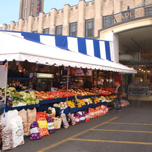

Green News
Green Buildings earn more Green
 There is a growing trend in commercial real estate to earn the EPA's Energy Star label. The award goes to the buildings that qualify in the top 25 percent in energy performance. Tinted windows, heat recovery systems, good insulation, high-efficiency lighting are all taken into consideration to lower a building's energy signature.
There is a growing trend in commercial real estate to earn the EPA's Energy Star label. The award goes to the buildings that qualify in the top 25 percent in energy performance. Tinted windows, heat recovery systems, good insulation, high-efficiency lighting are all taken into consideration to lower a building's energy signature.
The reason is simple: tenants are attracted to the green label achieving higher occupancy rates, increased rents and higher profit margins for buildings that are sold. Energy Star buildings usually cost far less to operate, reducing overhead. Qualified buildings could realize increases in revenues of up to $120,000 for buildings with 50,000 sq ft.
Soon, it may not be an option. Many municpalities and government agencies are reviewing the need to mandate or regulate the process of labeling energy performance in homes and commercial buildings. Who wants to be an owner or tenant of a building that's labeled as an "Energy Waster"?
Shopping green saves energy
Your day-to-day activities contribute more to your energy consumption than you realize. Apart from the gas and energy you use yourself, the businesses and retailers you patronize have to burn electricity and fuel to supply the products and services you consume.
One import thing you can do right away is to shop locally and purchase goods manufactured in your own town or state. Today, fresh fruits and vegetables are shipped all over the world at a high cost and waste of millions of gallons of fuel each year. Buying from your local farmers market can reduce energy waste. But be careful, even the vendors at the farmers market sometimes buy non-local products when stocks are low. Verify the origin of the products you buy.
Besides cutting energy waste, buying local benefits the local economy, promotes sustainable agriculture, and keeps your dollars working in your own community.
Recycling isn't alway Green
Saving an item from the landfill and reclaiming its raw materials may not always produce overall benefits for the environment. For example one of the current processes for recycling paper for reuse as a printing medium uses lots of bleach, energy and fresh water. Eliminating the bleach produces a paper that's gray or brownish in color, which reduces it appeal to consumers.
Recycling plastics can also create as much waste and pollution as you are trying to elimate in the first place. Instead of trying to recycle everything, more thought has to be put into what types of products you want to use and what materials those products should be made from.
In many cases, trade-offs will be in order. Glass weighs more than plastic, using more fuel to ship, but offers the advantage of easy recyclability. Steel and aluminium cost more to manufacture but last longer and can usually be recycled many times.
Fireplace: Fun or Folly?
Could a romantic evening with candlelight, wine and a roaring fire land you in jail? Or, perhaps with a ticket and hefty fine? In some parts of the country, burning wood in home fireplaces, like day-time sprinkling, has been banned by local governments.
Open fireplaces and older wood stoves not only pollute, they can emit 60 times as much pollution as newer models that meet or exceed EPA standards. But, they don't just pollute outdoors, the danger can be just as bad indoors, as well. Fireplaces and stoves produce microparticulate matter that can affect your lungs and health overall.
So, before you light your next fire, check with your municipal government or local EPA on the regulations regarding fireplace use and safety.